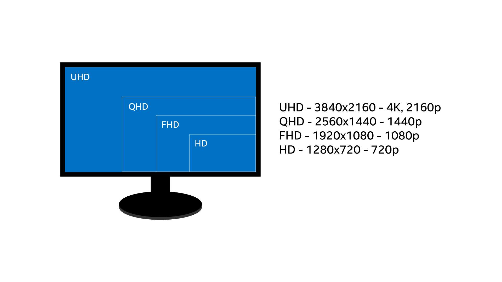
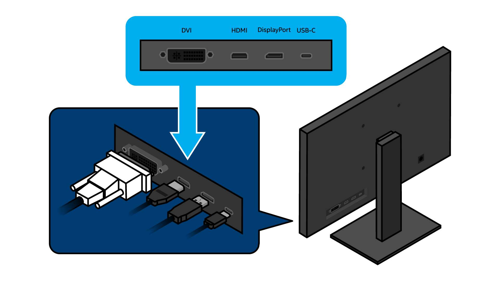

This thorough guide covers everything you need to know about gaming monitors, from refresh rate and response time to panel types and contrast ratio.
Gaming monitors are designed to make the output of your graphics card and CPU look as good as possible while gaming. They're responsible for displaying the final result of all of your computer's image rendering and processing, yet they can vary widely in their representation of color, motion, and image sharpness. When considering what to look for in a gaming monitor, it's worth taking the time to understand everything a gaming monitor can do, so you can translate gaming monitor specs and marketing into real-world performance.
Display technology changes over time, but the basic goals of monitor manufacturers remain consistent. We'll break down each group of monitor features below to isolate their benefits.
Resolution

Resolution is a key feature of any monitor. It measures the width and height of the screen in terms of pixels, or “picture elements”, the tiny points of illumination that compose an image. A 2,560 × 1,440 screen, for example, has a total of 3,686,400 pixels.
Common resolutions include 1,920 × 1,080 (sometimes called “Full HD” or FHD), 2,560 × 1,440 (“Quad HD”, QHD, or “Widescreen Quad HD”, WQHD), or 3840 × 2160 (UHD, or “4K Ultra HD”). Ultrawide monitors are also available with resolutions such as 2560 x 1080 (UW-FHD) and 3440 x 1440 (UW-QHD), 3840x1080 (DFHD), and 5120x1440 (DQHD).
Sometimes manufacturers only reference one measurement for standard resolutions: 1080p and 1440p refer to height, while 4K refers to width. Any resolution higher than 1,280 × 720 is high definition (HD).
The pixels being counted in these measurements are usually rendered the same way: As squares on a two-dimensional grid. To see this, you can either move closer to (or magnify) the screen until you perceive individual blocks of color, or zoom in on an image until it becomes “pixelated”, and you see a staircase of small squares instead of clean diagonal lines.
As you increase your display resolution, it gets harder to pick out individual pixels with the naked eye, and the clarity of the picture increases in turn.
Beyond increasing the detail onscreen in games or movies, there's another benefit to higher resolutions. They give you more desktop real estate to work with. That means you get a larger workspace on which to arrange windows and applications.
You might already know that a screen with 4K display resolution doesn't magically make everything it displays look 4K. If you play a 1080p video stream on it, that content usually won't look as good a 4K Blu-ray. However, it may still look closer to 4K than it used to, thanks to a process called upscaling.
Upscaling is a way to scale lower-resolution content to a higher resolution. When you play a 1080p video on a 4K monitor, the monitor needs to “fill in” all of the missing pixels that it expects to display (as a 4K monitor has four times as many pixels as 1080p). A built-in scaler interpolates new pixels by examining the values of surrounding pixels. HDTVs often feature more complex upscaling than PC monitors (with line-sharpening and other improvements), as the latter often simply turn one pixel into a larger block of the same pixels. The scaler is likely to cause some blurring and ghosting (double images), especially if you look closely.
Native Resolution
Monitors can also change resolution. Modern screens have a fixed number of pixels, which defines their "native resolution" but can also be set to approximate lower resolutions. As you scale down, onscreen objects will look larger and fuzzier, screen real estate will shrink, and visible jaggedness may result from interpolation. (Note that it wasn’t always this way: older analog CRT monitors can actually switch between resolutions without interpolation, as they do not have a set number of pixels.)
Scaling
Screens with 4K resolution and higher introduce another scaling concern: at ultra-high definition, text and interface elements like buttons can start to look small. This is especially true on smaller 4K screens when using programs that don’t automatically resize their text and UI.
Windows’ screen scaling settings can increase the size of text and layout elements, but at the cost of reducing screen real estate. There’s still a benefit of increased resolution, even when this scaling is used — onscreen content, like an image in an editing program, will appear at 4K resolution even if the menus around it have been rescaled.
Screen Size and PPI
Manufacturers measure screen size diagonally, from corner to corner. A larger screen size, in tandem with a higher resolution, means more usable screen space and more immersive gaming experiences.
Players sit or stand close to their monitors, often within 20”-24”. This means that the screen itself fills much more of your vision than an HDTV (when seated at the couch) or a smartphone/tablet. (Monitors boast the best ratio of diagonal screen size to viewing distance among common displays, with the exception of virtual reality headsets). The benefits of 1440p or 4K resolution are more immediately perceptible in this close-range situation.
Basically, you want to find a screen where you never perceive an individual pixel. You can do this using online tools that measure pixel density (in pixels per inch), which tells you the relative “sharpness” of the screen by determining how closely pixels are packed together, or the alternative pixels per degree formula, which automatically compares its measurements against the limits of human vision.
It's also worth considering your own eyesight and desktop setup. If you have 20/20 vision and your eyes are around 20” from your screen, a 27” 4K panel will provide an immediate visual upgrade. However, if you know your eyesight is worse than 20/20, or you prefer to sit more than 24” away, a 1440p panel may look just as good to you.
Aspect Ratio
A monitor's aspect ratio is the proportion of width to height. A 1:1 screen would be completely square; the boxy monitors of the 1990s were typically 4:3, or “standard”. They have largely been replaced by widescreen (16:9) and some ultrawide (21:9, 32:9, 32:10) aspect ratios.
Modern video games usually support a variety of aspect ratios, from widescreen to ultrawide. You can change this from an in-game settings menu.
Most online content, such as YouTube videos, also defaults to a widescreen aspect ratio. However, you'll still see horizontal black bars onscreen when watching movies or TV shows shot in theatrical widescreen (2.39:1, wider than 16:9), and vertical black bars when watching smartphone videos shot in thinner “portrait” mode. These black bars preserve the original proportions of the video without stretching or cropping it.
Ultrawides
Why opt for an ultrawide screen over regular widescreen? They offer a few advantages: They fill more of your vision, they can provide a movie-watching experience closer to the theater (as 21:9 screens eliminate “letterboxing” black bars for widescreen films), and they let you expand field of view (FOV) in games without creating a “fisheye” effect. Some players of first-person games prefer a wider FOV to help them spot enemies or immerse themselves in the game environment. (But note that some popular FPS games do not support high FOV settings, as they can give players an advantage).
Curved screens are another common feature on ultrawide monitors. These can correct one typical issue with larger ultrawides: Images at the distant edges of the screen look less distinct than those in the middle. A curved screen helps compensate for this and provides a clearer view of the extreme edges of the screen. However, its benefits are most noticeable on larger screens over 27”.
Color
When viewing two monitors side-by-side, it's sometimes easy to see which has more brilliant hues, deeper blacks, or a more lifelike color palette. It can be harder to put the picture together in your head when reading specifications, however, because color in monitors is evaluated in many different ways. There's no one spec to focus on: Contrast ratio, brightness, black level, color gamut, and more all come into play. Before moving on to larger color features, let's define these terms one-by-one.
Contrast Ratio
Contrast ratio, one of the most basic measures of a monitor's performance, measures the ratio between the extremes of black and white that the screen can display. A baseline contrast ratio like 1,000:1 means that the white parts of the image are 1,000 times brighter than the dark parts.
When it comes to contrast ratios, higher numbers are better. A high contrast ratio, like 4,000:1, means bright highlights, inky blacks, and dark areas where details are still perceptible. A contrast ratio of 200:1, on the other hand, means that the blacks look more like grays, and the colors look faded and indistinct from each other.
Use caution when LCDs advertise very high “dynamic contrast ratios”, which are achieved by changing the behavior of the backlight. For gaming or everyday use, the standard “static” contrast ratio discussed above is a better marker of the monitor's quality.
Luminance
Brightness is often measured in “luminance”, a precise measure of how much light is emitted by the screen. It's given in candelas per square meter (cd/m2), a unit which is also called a “nit”. For HDR displays, the VESA (Video Electronics Standards Association) has standardized a suite of tests for luminance using specific test patches. When comparing luminance specs, check to make sure they use this consistent test platform, rather than a proprietary metric.
Black Level
In all LCD screens, light from the backlight inevitably leaks through the liquid crystal. This provides the basis for the contrast ratio: For example, if the screen leaks 0.1% of the illumination from the backlight in an area that's supposed to be black, this establishes a contrast ratio of 1,000:1. An LCD screen with zero light leakage would have an infinite contrast ratio. However, this isn't possible with current LCD technology.
“Glow” is a particular issue in dark viewing environments, which means that achieving low black levels is a major selling point for LCD monitors. However, an LCD screen can’t reach a black level of 0 nits unless it’s completely turned off.
OLEDs have incredible black levels because they don't use backlights. When an OLED pixel isn't activated by electricity, it creates no light at all. OLED screens may advertise black levels “below 0.0005 nits”, as taking measurements more precise is usually prohibitively expensive. However, the black level is usually much closer to 0 than 0.0005.
Color Depth
Monitors need to display many subtle shades of color. If they can't smoothly transition between slightly different hues, we see onscreen color “banding” — a stark shift between two different colors, creating visibly lighter, and darker bands where we should see a seamless gradient. This is sometimes referred to as “crushing” the colors.
A monitor's ability to display many slightly different colors, and thus avoid banding and inaccuracy, is measured by color depth. Color depth specifies the amount of data (measured in bits) the screen can use to build the color of one pixel.
Each pixel onscreen has three color channels — red, green, and blue — illuminated at varying intensities to create (typically) millions of shades. 8-bit color means that each color channel uses eight bits. The total number of shades possible in a screen with 8-bit color depth is 28 x 28 x 28=16,777,216.
Common color depths:
6-bit color = 262,144 colors
8-bit color, or “True Color” = 16.7 million colors
10-bit color, or “Deep Color” = 1.07 billion colors
True 10-bit monitors are rare — many monitors use forms of internal color processing, such as FRC (frame rate control), to approximate a greater color depth. A “10-bit” monitor could be an 8-bit monitor with an additional FRC stage, often written as “8+2FRC”.
Some inexpensive LCD panels use 6-bit color along with “dithering” to approximate 8-bit color. In this context, dithering means the insertion of similar, alternating colors next to one another to fool the eye into seeing a different in-between color that the monitor cannot accurately display.
Frame Rate Control, or FRC, alternates different colors with each new frame to achieve this. While this can be implemented more cheaply than 8-bit True Color, color accuracy suffers, especially in low-light environments. Some screens also feature 8-bit color depth with an additional FRC stage (commonly listed as “8-bit + FRC”) to approximate 10-bit color.
Monitors sometimes feature a Look-Up Table (LUT) corresponding to a higher color depth, such as 10-bit color. This helps speed up color correction calculations that take place within the monitor as it converts color input to a color output appropriate for your screen. This intermediate step can help create smoother color transitions and more accurate output. These are usually reserved for more professional grade monitors than general consumer and gaming displays.
Color Space
You'll often hear about a monitor's color "space" or "gamut", which is different from its bit depth. The color space specifies the spectrum of colors that can appear, rather than just calculating the number of them.
Your eye can see a much wider spectrum of color than current displays can reproduce. To visualize all visible colors, a standard called CIE 1976 maps them to a grid, creating a horseshoe-shaped graph. The color gamuts available for monitors appear as subsets of this graph:
Common, mathematically defined color gamuts include sRGB, Adobe RGB, and DCI-P3. The first is a common standard for monitors (and the officially designated color space for the web). The second, wider standard is mostly used by photo and video editing professionals. The third, DCI-P3, is even wider, and is commonly used for HDR content.
Monitors advertising "99% sRGB" are claiming the screen covers 99% of the sRGB color gamut, which is often considered indistinguishable from 100% when viewed with the naked eye.
In LCD screens, the backlight and color filters determine the color space. All of the light created by the backlight passes through a color filter with red, green, and blue spots. Narrowing the “band-pass” of this filter restricts the wavelengths of light that can pass through, increasing the purity of the final colors produced. Although this lessens the screen's efficiency (as the filter now blocks more of the backlight's output), it creates a wider color gamut.
Common backlight technologies include:
White LED (W-LED) backlight: A blue LED coated in yellow phosphors emits white light, which is filtered through red, green, and blue color channels to become the pixel's final color. W-LED backlights produce a standard sRGB gamut color space. Sometimes an additional coating of special nanoparticles can be applied to a W-LED backlight to produce wider color gamut, often resulting in wider DCI-P3 color space coverage.
Quantum Dot Coating (QD): A blue LED backlight shines on green and red nanoparticles, which are manufactured to a tight tolerance. These emit a narrow frequency of green and red light. The nanoparticles don't actually filter out light, which makes the process highly efficient. Instead, they convert and re-emit light on a narrow frequency range, which yields a wide color gamut.
OLEDs, which do not use backlights, can feature a wide color gamut comparable to QD (75% of Rec. 2020, for example).
High Dynamic Range (HDR)
HDR monitors display brighter images with better contrast and preserve more detail in both light and dark areas of the screen. Using an HDR monitor, you might be better able to spot something moving down a dark corridor in a horror game, or see more dramatic shafts of sunlight in an open-world title.
Though they work best with HDR content (which only some games and movies support), these monitors typically support 10-bit color depth and backlights that support a wide color gamut, which will also improve standard content (SDR). (Note that HDR monitors are often not true 10-bit color, but rather 8+2FRC displays that accept a 10-bit input signal).
For LCD displays, a high-end backlight feature called local dimming is critical to HDR quality. Dimming zones for the backlight behind the screen control the brightness of groups of LEDs; more dimming zones means more precise control, less “blooming” (where light areas of the image brighten dark ones), and generally improved contrast.
Dimming techniques vary:
Edge-lit local dimming relies on groups of LEDs clustered around the edges of the screen to brighten or dim the image in what is typically a fairly limited number of dimming zones.
Full Array Local Dimming (FALD), a more high-end option, uses far more dimming zones (typically hundreds) directly behind the panel rather than just at the edges of the screen. It can give more finite control of the HDR content and dimming of the screen as a result.
It can be tough to evaluate the quality of an HDR monitor on your own. You should rely on HDR standards like VESA’s DisplayHDR, which measures the relative quality of an HDR monitor by listing out specs like their dimming capability.
The DisplayHDR standard is more reliable than specs that are advertised as "Typical", as that wording allows manufacturers to list results that are true averages. Look for monitors that meet the minimum specification for different levels of DisplayHDR.
On the low end, a DisplayHDR 400 screen can have a peak brightness of 400 nits (compared to a 300-nit standard monitor), but only needs a standard 95% sRGB color gamut and 8-bit color depth. DisplayHDR 400 doesn't require backlight local dimming.
On the higher end, a DisplayHDR 600 screen needs a brightness of 600 nits, 90% of the DCI-P3 color gamut (providing a wider color space), 10-bit color depth, and some form of local dimming.
OLED standards add additional requirements to showcase the technology's deeper black levels. DisplayHDR True Black 400 and 500 require a black level below 0.0005 in addition to similar peak brightness standards.
Refresh Rate
Refresh rate is the frequency at which your entire screen refreshes the image. Higher refresh rates make onscreen motion look smoother, because the screen updates the position of each object more rapidly. This can make it easier for competitive players to track moving enemies in a first-person shooter, or just make a screen feel more responsive as you scroll down a webpage or open an app on your phone.
Response rates are measured in hertz: A response rate of 120Hz, for example, means that the monitor refreshes every pixel 120 times per second. While 60Hz was once the standard for both PC monitors and smartphones, manufacturers are increasingly adopting higher refresh rates.
The benefits of jumping from 60Hz to 120Hz or 144Hz are clear to most players, especially in fast-paced first-person games. (However, you'll only see benefits if you also have a GPU powerful enough to render frames faster than 60fps at the resolution and quality settings you've chosen).
A higher refresh rate makes it easier to track moving objects with your eye, makes sharp camera movements feel smoother, and reduces perceived motion blur. Online communities are divided about the improvement provided by monitors over 120Hz. If interested, it's worth checking one out in person to see how much of a difference it might make for you.
Frame rate, measured in frames per second (FPS), tracks the number of images your graphics hardware draws. This online motion test demonstrates the improvements players will see when tracking moving objects at higher frame rates and refresh rates.
However, you'll only actually see those extra frames onscreen if you have a refresh rate that matches or exceeds them; similarly, you only benefit from a high refresh rate screen if you have a CPU and graphics card capable of high frame rates. Plan your build accordingly to get the full benefit from your hardware.
Response Time
Response time measures the time it takes a single pixel to change color in milliseconds. Lower response times mean fewer visual artifacts, such as motion blur or "trails" behind moving images.
Response times must be fast enough to keep up with the refresh rate. On a 240Hz screen, for example, a new frame is sent to the screen every 4.17 milliseconds (1000/240 = 4.17).
Manufacturers often list "gray-to-gray" response time — the time it takes for a pixel to change from one shade of gray to another. The quoted number often indicates the manufacturer's best-case result from a battery of different tests, rather than a reliable average.
An image-sharpening process called overdrive also influences test results. Overdrive applies increased voltage to pixels to boost the speed of color changes. If adjusted carefully, overdrive can lessen visible trails and ghosting (a faint double image) during motion. If not, it may "overshoot" the intended values and cause other visual artifacts.
Turning overdrive up can yield better results on gray-to-gray tests, but can also create visual artifacts that aren't disclosed when quoting the best number from those gray-to-gray tests. Due to all the factors affecting reported response times, it's best to refer to independent reviewers, who can measure response time across different manufacturers.
Input Lag
Players sometimes confuse response time with input lag, a measurement of the delay before your actions appear onscreen, similarly measured in milliseconds. Input lag is felt rather than seen, and is often a priority for players of fighting games and first-person shooters.
Input lag is a side effect of the processing done by the monitor scaler and the screen's internal electronics. Selecting “Game Mode” on your monitor's adjustment menu often switches off image processing features and lessens input lag. Disabling VSync (which prevents some visual artifacts) in in-game option menus can also help reduce input lag.
Premium Features
Adaptive Sync
Screen tears will be instantly familiar to most players: A graphical glitch that appears as a horizontal line on your screen, with slightly mismatched images above and below it.
The glitch involves both your graphics card and monitor. The GPU draws a varying number of frames per second, but the monitor refreshes its screen at a fixed rate. If the GPU is midway through overwriting the previous frame in the frame buffer when the monitor reads the frame buffer to refresh the screen, the monitor will display the mismatched image as-is. The top of the image might be a new frame, but the bottom section will still show the previous frame, creating the “tear”.
VSync (vertical sync) provides one solution to this issue. This in-game feature reduces the speed at which frames are drawn in order to match your monitor's refresh rate. However, VSync can cause stuttering when the frame rate drops below that cap. (For example, the GPU may suddenly drop to 30fps when it can't deliver 60fps). The increased load on the GPU can also result in input lag.
While improvements to VSync (such as NVIDIA's Adaptive VSync*) have been made, two monitor technologies provide alternative solutions: NVIDIA G-Sync* and AMD Radeon FreeSync*. These technologies force your monitor to sync up with the GPU, rather than vice versa.
G-Sync monitors use NVIDIA's proprietary G-Sync scaler chip to match monitor refresh rates to GPU output, as well as predict GPU output based on recent performance. It also helps prevent stutter and input lag, which can result from duplicate frames being drawn as the first one waits to be displayed.
AMD Radeon FreeSync monitors operate along similar lines, matching the display to GPU output to avoid screen tearing and stutters. Rather than using a proprietary chip, they're built on open Adaptive Sync protocols, which have been built into DisplayPort 1.2a and all later DisplayPort revisions. Though FreeSync monitors are often cheaper, the trade-off is that they aren't subject to standard testing before release, and vary widely in quality.
Variable Refresh Rate (VRR) is a general term for technologies that sync up your monitor and GPU. Adaptive Sync is an open protocol included in DisplayPort 1.2a and later revisions. Recent Intel, AMD, and NVIDIA graphics technologies can all work with Adaptive Sync monitors.
Motion Blur Reduction
Both LCDs and OLEDs "sample and hold", displaying moving objects as a series of static images that are rapidly refreshed. Each sample remains onscreen until it's replaced with the next refresh. This "persistence" causes motion blur, as the human eye expects to track objects smoothly rather than see them jump to a new position. Even at high refresh rates, which update the image more often, the underlying sample-and-hold technology causes motion blur.
Motion blur reduction features use backlight strobing to shorten the time that frame samples are displayed onscreen. The screen turns black after every sample before displaying the next, reducing the time that a static image is held onscreen.
This mimics the operation of older CRT monitors, which worked differently than current LCD technology. CRT screens were illuminated by phosphors that rapidly decayed, providing brief impulses of illumination. This meant that the screen was actually dark for most of the refresh cycle. These quick impulses actually created a smoother impression of motion than sample-and-hold, and motion blur reduction features work to replicate this effect.
Because the backlight is being rapidly turned off and on, these features also lessen the brightness of the display. If you're planning to use motion blur reduction backlight strobing, ensure that the screen you're buying has high peak brightness.
These backlights should only be enabled for gaming and fast-moving content, as they will deliberately cause the backlight to flicker, which may be annoying during day-to-day tasks. They also can typically only be used at a fixed refresh rate (like 120Hz), and won't work at the same time as VRR.
Panel Types
Cathode Ray Tube (CRT)
These boxy computer monitors were common from the 1970s until the early 2000s, and are still prized by some players today for their low input lag and response times.
CRTs used three bulky electron guns to send a beam to excite red, green, and blue phosphors on the screen. These phosphors decayed within a few milliseconds, meaning the screen was illuminated by brief impulses on each refresh. This created a smooth illusion of motion, but also visible flickering.
Liquid Crystal Display (LCD)
In TFT LCDs (thin-film-transistor liquid crystal displays), a backlight shines light through a layer of liquid crystals that can twist, turn, or block it. The liquid crystals do not emit light themselves, which is a key difference between LCDs and OLEDs.
After passing through the crystals, the light then passes through RGB filters (subpixels). Voltage is applied to illuminate each subpixel at a different intensity, leading to the mixed color that appears as one illuminated pixel.
Older LCDs used Cold-Cathode Fluorescent Lamps (CCFLs) as backlights. These large, energy-inefficient tubes were incapable of controlling the brightness of smaller zones of the screen, and were eventually phased out in favor of smaller, energy-efficient light-emitting diodes (LEDs).
LCD panels are available in a range of technologies and can vary widely in color reproduction, response time, and input lag, especially among high-end options. However, the following generalizations about panels usually hold true:
Organic Light-Emitting Diode (OLED)
OLED screens are emissive, meaning they create their own light, rather than transmissive screens that require a separate light source (like LCDs). Here, the application of electric current causes a layer of organic molecules to light up on the front of the screen.
Backlights may be imperfectly blocked by the liquid crystals in an LCD, causing black areas of an image to appear gray. Because OLEDs have no backlight, they can achieve “true black” by simply turning off a pixel (or at least 0.0005 nits, the lowest measurable brightness).
OLEDs therefore boast very high contrast ratios and vibrant color. The elimination of the backlight also makes them slimmer than LCDs. Much as LCDs were a thinner, more energy-efficient evolution of CRTs, OLEDs may prove a thinner evolution of LCDs. (They can also be more energy-efficient when displaying dark content, like movies, but less energy-efficient with white screens, such as word processing programs).
Downsides to the technology include its increased cost, the risk of screen burn-in, and a shorter lifespan than older monitor technologies.
Mounting
Gaming monitors often include a mount with adjustable height, tilt, and degree of rotation. These help you find an ergonomic position for your monitor and help it fit in varied workspaces.
The VESA mounting holes on the back of your monitor determine its compatibility with other mounts, such as wall mounts or adjustable monitor arms. Defined by VESA (the Video Electronics Standards Association, a group of manufacturers), this standard specifies the distance between the monitor's mounting holes in millimeters, as well as the screws required to attach the monitor.
Ports

You'll find a multitude of ports behind or beneath your monitor. Display interfaces connect your screen to graphics output from your PC, while USB and Thunderbolt™ ports provide data and power to external devices.
Display
VGA (Video Graphics Array): Older monitors may feature this legacy port, a 15-pin analog connection introduced in 1987. It transmits only video, at resolutions up to 3840 × 2400.
Single-Link DVI (Digital Visual Interface): The oldest display interface found on many modern monitors, this 24-pin digital connection dates back to 1999. It transmits only video and can connect to VGA or HDMI with an adapter. It supports resolutions up to 1920 × 1200.
Dual-Link DVI: This revision doubles the bandwidth of single-link DVI. It displays up to 2560 × 1600 resolution and supports refresh rates up to 144Hz (at 1080p).
HDMI: This ubiquitous interface transmits video and audio, and will also connect to game consoles. Cables labeled “High-Speed HDMI” should work with every revision of HDMI before HDMI 2.1.
DisplayPort: High-bandwidth ports that transmit video and audio. All DisplayPort cables work with all DisplayPort versions up to 2.0, which requires active cables (cables that include an electronic circuit) for full bandwidth. Revisions 1.2 and later allow you to link multiple monitors together via “daisy chaining” (though this also requires compatible monitors).
Peripherals
USB: These common ports transfer both data and power. Many monitors let you connect keyboards and mice to them to free up USB ports on your PC. USB Type-C ports feature a reversible design and can double as DisplayPorts.
Thunderbolt™ 3 Technology: All-purpose port that uses USB-C connectors, supports DisplayPort 1.2, transmits data at up to 40GBit/s using the Thunderbolt™ protocol, and supplies power.
Audio
Input: 3.5mm jack for connecting an audio cable from your computer, allowing you to play sound over the monitor's internal speakers. Note that HDMI and DisplayPort cables also transmit audio, and are a simpler solution for many users.
Headphones: 3.5mm jack for connecting headphones directly to your monitor, which then passes on the audio signal from your PC.
Conclusion
Figuring out what to look for in a gaming monitor depends heavily on the choices you've made about the rest of your computer. Modern monitors can generally help you avoid the dropped frames, input lag, and visual artifacts common in older technologies, but the value of increased resolution, color depth, and motion smoothing features will vary from player to player. It's down to you to separate the must-haves from the nice-to-haves.